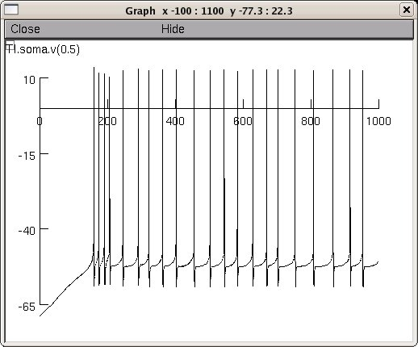

This is the readme for the model associated with the papers: 1. Zhu JJ, Uhlrich DJ, Lytton WW (1999) Burst firing in identified rat geniculate interneurons. Neuroscience 91:1445-60 2. Zhu JJ, Lytton WW, Xue JT, Uhlrich DJ (1999) An intrinsic oscillation in interneurons of the rat lateral geniculate nucleus. J Neurophysiol 81:702-11 These model files were supplied by Bill Lytton with the following disclaimer: This is an attempt to recreate a set of simulations originally performed in 1994 under NEURON version 3 and last tested in 1999. When I ran it now it did not behave exactly the same as previously which I suspect is due to some minor mod file changes on my side rather than due to any differences among versions. After playing around with the parameters a little bit I was able to get something that looks generally like a physiological trace in J Neurophysiol, 81:702--711, 1999, fig. 8b top trace:  This sad preface is simply offered in order to encourage anyone who is interested in this model to make and post fixes. I'm happy to help out. Simulation by JJ Zhu To run nrnivmodl nrngui mosinit.hoc